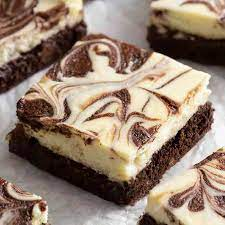
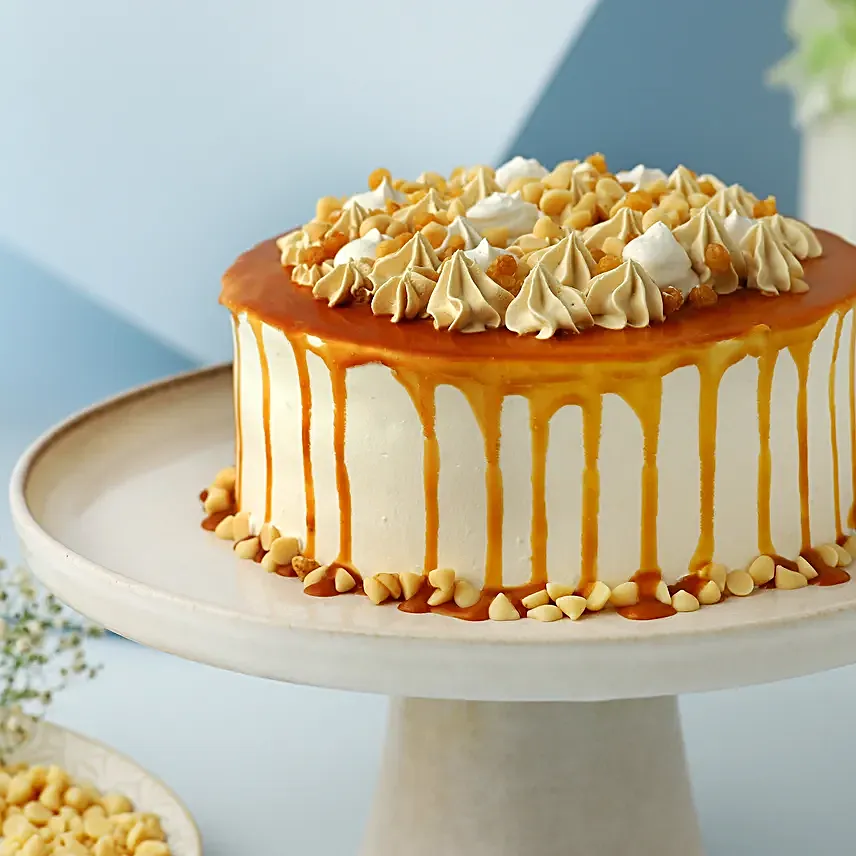
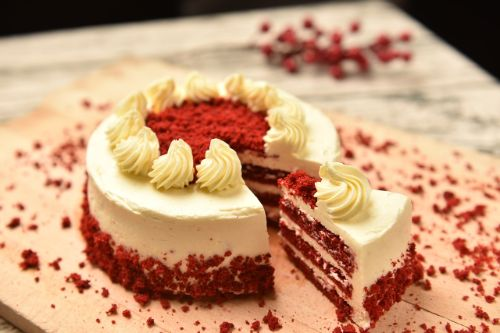

Cheesecake
Cheesecake is a sweet dessert consisting of one or more layers. The main, and thickest layer, consists of a mixture of soft, fresh cheese, eggs, and sugar. If there is a bottom layer, it often consists of a crust or base made from crushed cookies, graham crackers, pastry, or sponge cake.
Caramel Cake
Caramel cake is a moist and delicious layered cake that is made with caramel flavored icing. It is often made with caramel sauce, which gives it a rich and indulgent flavor. Caramel cake is perfect for any occasion and is sure to satisfy your sweet tooth.
Red Velvet Cake
Red velvet cake is a popular cake with a dark red, bright red, or red-brown color. It is traditionally prepared as a layer cake topped with cream cheese or cooked roux icing. The reddish color is often enhanced by adding beetroot or red food coloring.